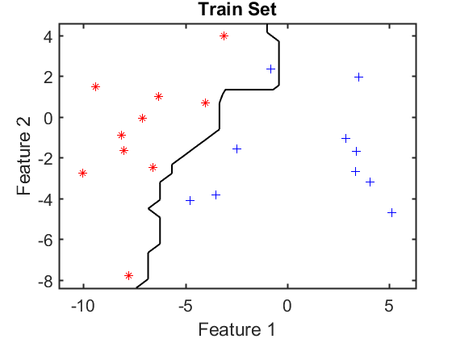
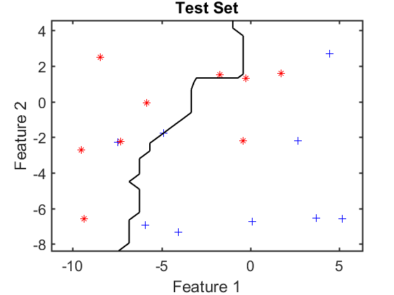

classifiers
Introduction of defining, training and evaluating classifiers
PRTools and PRDataFiles should be in the path
Download the m-file from here. See http://37steps.com/prtools for more.
Contents
prwaitbar off % waitbar not needed here delfigs % delete existing figures randreset(1); % takes care of reproducability
Define a classifier
u = knnc([],3); % the untrained 3-NN classifier
Define datasets for training and testing
a = gendatb([20 20],2); % define dataset a = setlablist(a,[' A ';' B ']); % define class names [t,s] = gendat(a,0.5); % split it 50-50 in train set and test set t = setname(t,'Train Set'); % name the train set s = setname(s,'Test Set'); % name the test set
Train the classifier
w = t*u; % train the classifier
Show the trained classifier on the training set
figure; scatterd(t); % show training set axis equal plotc(w); % plot classifier V = axis; dt = t*w; % apply classifier to the training set et = dt*testc; % compute its classification error fprintf('The apparent error: %4.2f \n',et); % print it labt = getlabels(t); % true labels of training set labtc= dt*labeld; % estimated labels of classified training set disp([labt labtc]); % show them. They correspond to the estimated error
The apparent error: 0.05 A A A B A A A A A A A A A A A A A A A A B B B B B B B B B B B B B B B B B B B B
Compute the apparent error and show the estimated and true labels in classifying the training set. They corespond to the apparent error and the classifier in the scatter plot
Show the trained classifier on the test set
figure; scatterd(s); % show test set axis(V); plotc(w); % plot classifier ds = s*w; % apply classifier on the test set es = ds*testc; % compute its classification error fprintf('The test error: %4.2f \n',es); % print it labs = getlabels(t); % true labels of test set labsc= ds*labeld; % estimated labels of classified test set disp([labs labsc]); % show them. They correspond to the estimated error
The test error: 0.20 A A A A A A A A A B A A A A A A A A A A B B B A B B B B B B B B B B B A B B B A
Compute the test error and show the estimated and true labels in classifying the test set. They corespond to the test error and the classifier in the scatter plot